Field Service Lightning
Salesforce Service Cloud
I worked as a product designer on the Service Cloud design team at Salesforce on the Field Service Lightning (FSL) product. FSL allows companies to benefit from the power of the Salesforce platform while managing their field service operations. Our customers use FSL to assign jobs to their mobile workers and help them manage their day-to-day operations.
The FSL mobile app, available for both iOS and Android, lets mobile technicians track their work orders and see all relevant information to get to their sites at the right time, and get up-to-speed on the tasks they need to complete.
I was very involved in designing new features. Two features I worked on were the ability to include a list picker, and the ability for mobile workers to view and submit time sheets.
The need for a list picker
Salesforce is a very configurable platform, and admins are able to set up their own custom, filtered lists of standard objects, including service appointments. At the time of this project, Salesforce supported creating lists of service appointments, but V1 of the mobile app did not show them. Customers were asking for this feature so that their mobile workers could see appointments grouped in categories such as “High Priority Appointments” or “Appointments in Northern California.” We needed a way to show the admin-configured list views to mobile workers using the mobile app.
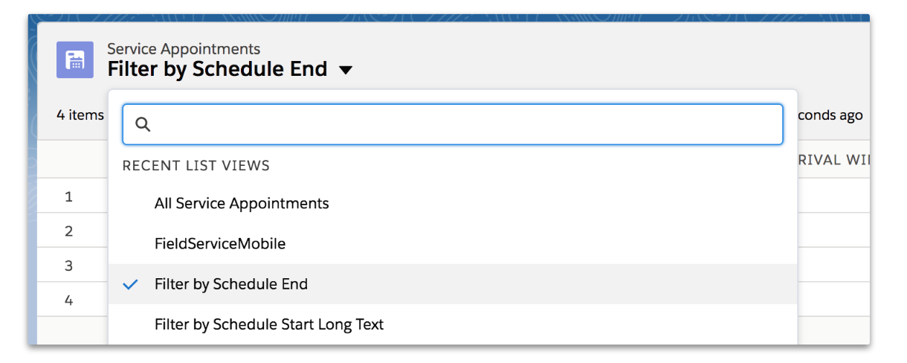Existing admin configuration for list pickers in Salesforce FSL Setup
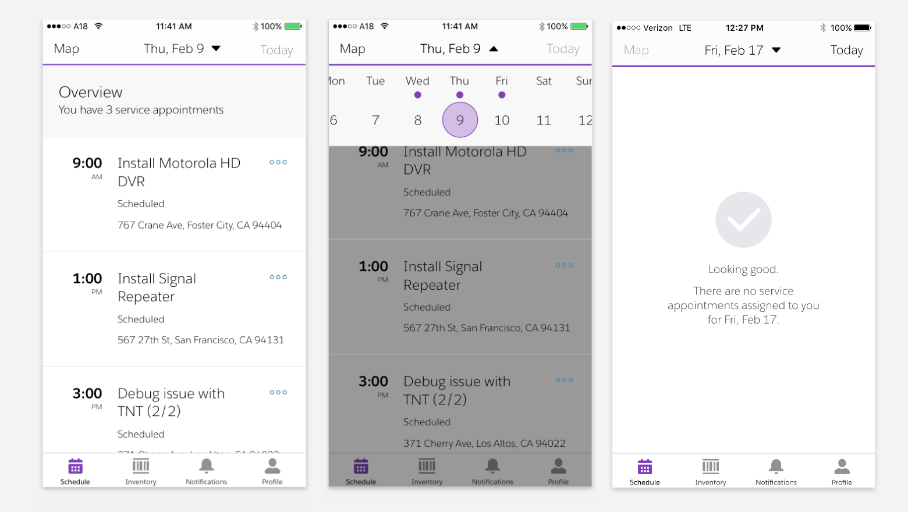Original app design that didn't show the admin-configured listviews
Designing the list picker
I started by exploring patterns that we might be able to use to surface a list of service appointments on the “Schedule” tab in the mobile app. Since it was the most extensible and most closely matched the Salesforce admin experience, I decided to move forward with the dropdown list picker.
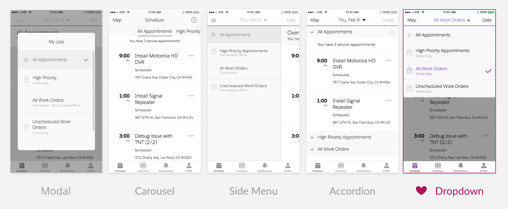List picker design explorations
My designs placed the name of the currently-selected list at the center of the navigation bar. However, this displaced the date-picker and current selected day. To handle this, I moved the date picker to button on the top right, and moved by the link to “Today” and the current date to other locations. I also added “Tomorrow” based on our understanding that many mobile workers check their work for the upcoming day. I changed the buttons to use icons instead of text so they would be more visually distinct from the new text in the navigation bar.
We were also able to move the map into the same view as the list of service appointments, so users could see both the location and the details of the appointments at once. The following image and video show the current implementation of this feature.
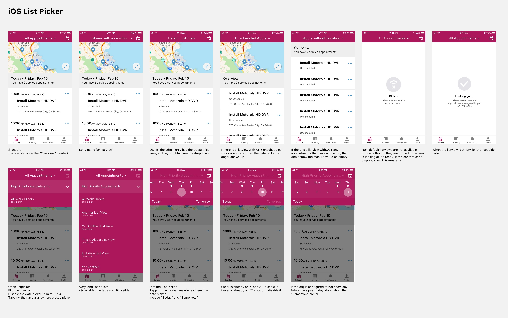Part of the list picker design spec

Implemented list picker design
The need for time sheets
Companies needed to track how much time mobile workers spend on various tasks throughout the day in order to pay them and to bill their customers correctly. FSL already provided standard objects that Salesforce admins can use to keep track of time sheet data, but there was no out-of-the-box UI that supported this feature in our mobile app. The ability to manage time sheets was one of our top requests from customers.
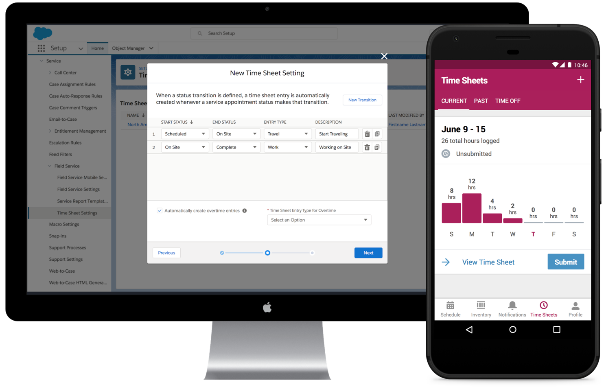My design for a time sheets feature in Salesforce Field Service Lightning
For this project, we considered how three of our personas had slightly different needs. Mobile workers need to track their time, and also ensure that they submit accurate time sheets. Managers need to review and approve time sheets. Admins need to configure FSL to match how their company handles time sheets.
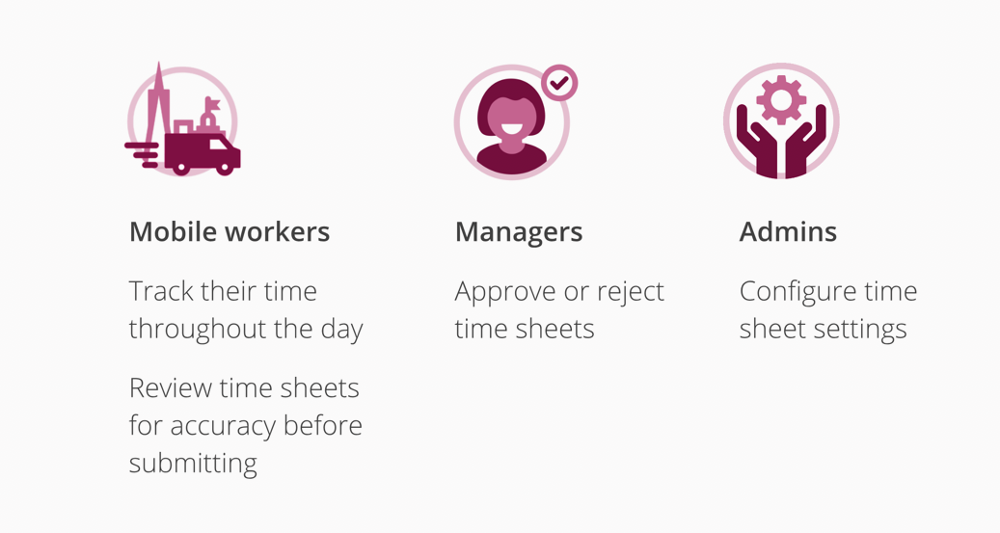Time sheets user scenarios
Designing time sheets
I first considered the time sheet feature as part of a quick visionary design exercise. The goal for this exercise was to get smart about user needs, and create alignment when discussing the feature.
I started by exploring other time tracking tools. I quickly began noticing common features, and also discovered key concepts such as wage codes (i.e. how time should be charged) and billing rates. I also noticed that time tracking was often bundled together with the ability to track expenses and produce invoices, which later turned out to be a common need for our customers as well.
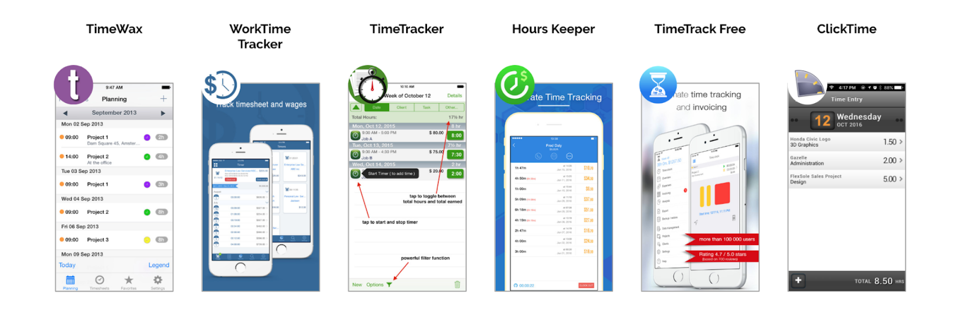Examples of other time tracking tools
I understood time sheets in two parts: time tracking, and time sheet submission. I reached out to the other designers on my team for feedback on my early sketches, and then moved quickly into creating a mid-fi prototype that I could test with real field service mobile workers. Having a design to show during user testing helped guide the participants and helped reveal key research questions. In this design, I included the ability for a mobile worker to start and stop a clock to track their time. The mobile workers could also access their time sheets in the app, and submit them to their manager.
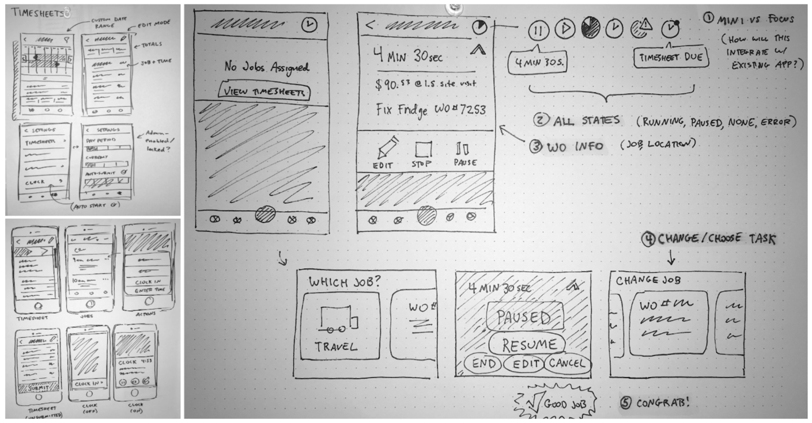Sketching concepts for the visionary exercise
I learned from our research that mobile workers really want to be able to manually edit what time is entered on their time sheet. They are frequently distracted by the task of going to a job site, and may forget to start or stop a clock. They didn‘t want to feel like they were tied to a punch clock, or were being automatically tracked. The workers also pointed out that they often round their start or stop estimates to the nearest 15-minute mark, to avoid awkward numbers when billing customers.
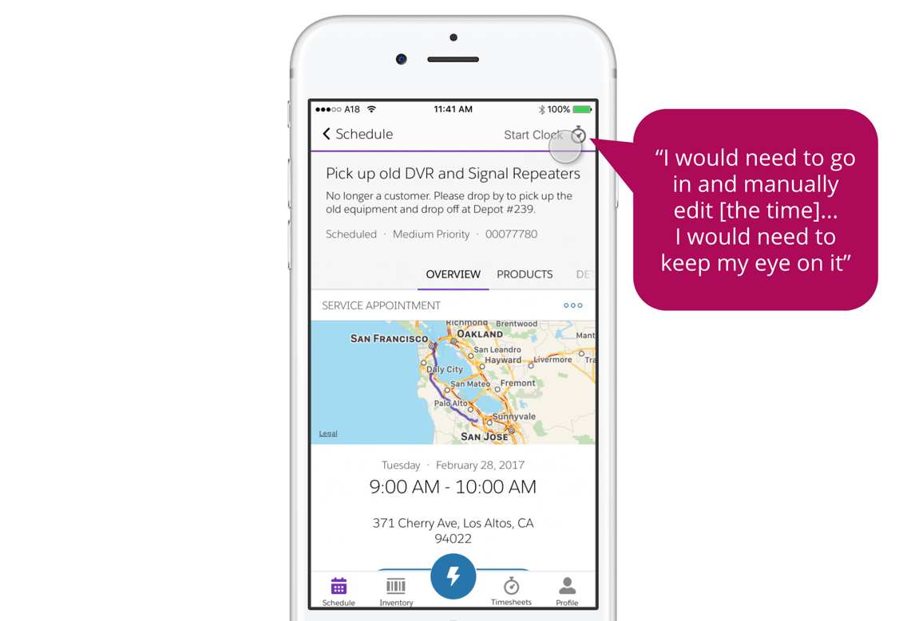Participants were not a fan of designs that looked like a punch clock
I was later joined by a new designer and a new PM. We worked together to develop a shared understanding of the problem by conducting discovery interviews, defining user flows, and iteratively designing a solution for the mobile experience. We then worked with our researcher to set up another round of user testing.
One of our research questions was how to best show a time sheet in the app. I had a hypothesis that users would want to see how much of their time was spent in overtime, which could be shown as a pie chart. Another idea was to show users their time represented as a bar chart of time worked per day. Users much preferred the bar chart, because it gave them a quick way to gauge whether any time was missing from the time sheet, and also aligned well with how they remembered spending their time.
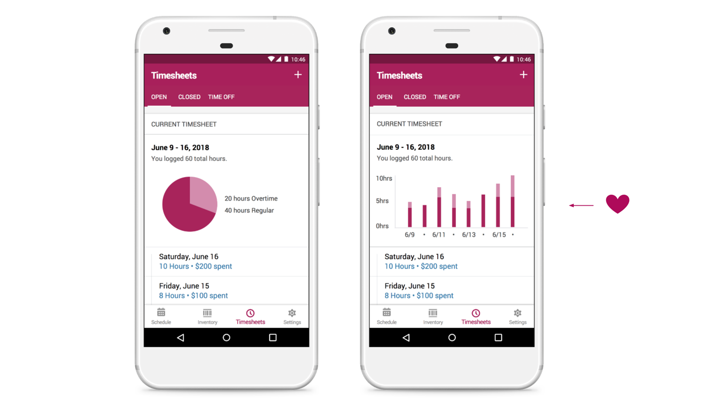Users preferred seeing their time as a bar chart
I made many prototypes throughout the course of this project. I used Principle to create the following prototype showing the experience for a mobile worker viewing their time sheets on the Android app.

Prototype made in Principle
Documentation and working with eng
The Field Service mobile app uses a color branding system that avoids any hard-coded colors in the app. Admins can configure any color to match their own company‘s brand, and even to invert the text and background color to turn on “Dark Mode.” I used this existing system to communicate the color token assignments with developers building the new feature.
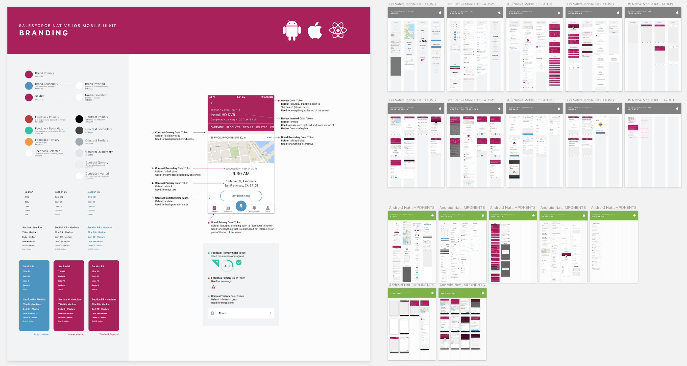Sketch Component Library Showcasing the FSL Branding System
Reflections
One thing that worked very well on the time sheet project was that we maintained a shared, running document that we kept up-to-date, and that each person could reference throughout the design process. We maintained a Google Slides deck that we were ready to present at any time. This was immensely powerful in creating visibility, getting asynchronous feedback from stakeholders, and iterating quickly on designs.
Another lesson from working on FSL was the importance of designers having a deep understanding of the system. For example, for the list picker, I needed to understand not only what types of lists admins might create, but also how to configure them in Salesforce on my own, in order to fully understand the design constraints.